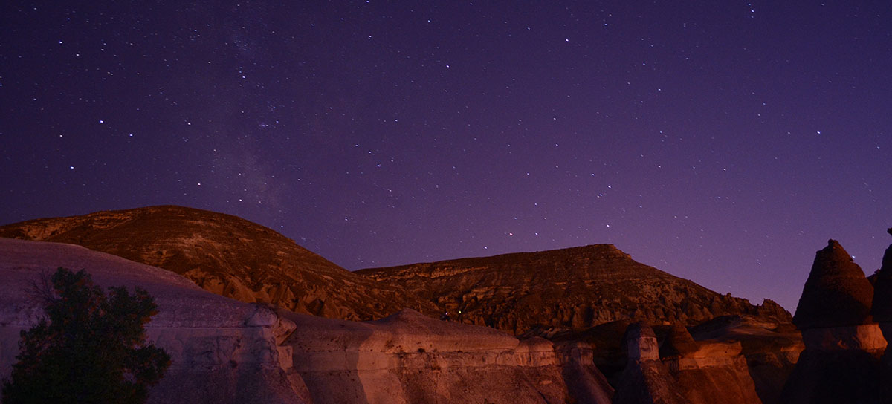
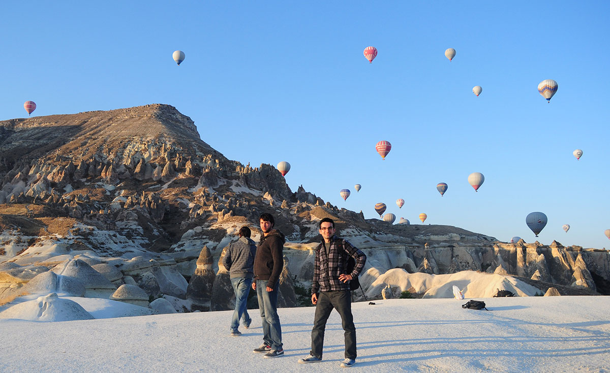
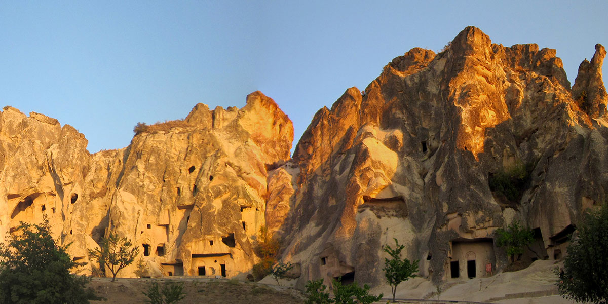

Cappadocia
September 27, 2012After a 9-hour bus ride from Istanbul, I arrived at Cappadocia. With its unique landscape, it's a great place to visit and shoot timelapse videos.
My first stop in Cappadocia was Urgup, where I joined my friends. We spent the first day in Urgup shooting timelapse videos. You can watch the footage above. (Also, check out my friend's Vimeo page for more.)
Next day, we headed to Avanos, which is a town famous for pottery. Many pottery shop owners offer demonstrations and introduction classes for a small fee. We visited some of the pottery shops and watched the demonstrations.
We camped the night in Pasabag valley, a place where we could find one of the best collection of fairy chimneys in the site. It was dark and quiet at night. There were not many artificial light sources in the neighborhood. So, it was also a good place to observe the Milky Way with the naked eye. We were even able to capture the movements of stars in our timelapse videos (after 0:47 in the video).

Just before the sunrise, we saw hot air balloons rising behind the hills and filling the sky. There were approximately 40 – 50 balloons in the air flying over the fairy chimneys (0:30 - 0:45 in the video).

One of the must visit places in Cappadocia is the Goreme Open Air Museum, a UNESCO World Heritage site. The museum consists of chambers carved into stones. There are ancient chapels, food courts, and multi-purpose halls inside the carved rocks.

My initial plan was to visit the museum early in the morning before going back to Istanbul. However, I was not able to visit there until late afternoon. The irony is that "Goreme" literally means "be not able to see/visit" in Turkish. Fortunately, the museum was still open when I arrived and I was indeed able to visit.
Have you been to Cappadocia? How was your experience? Were you able to visit Goreme? Share your experience in the comments...